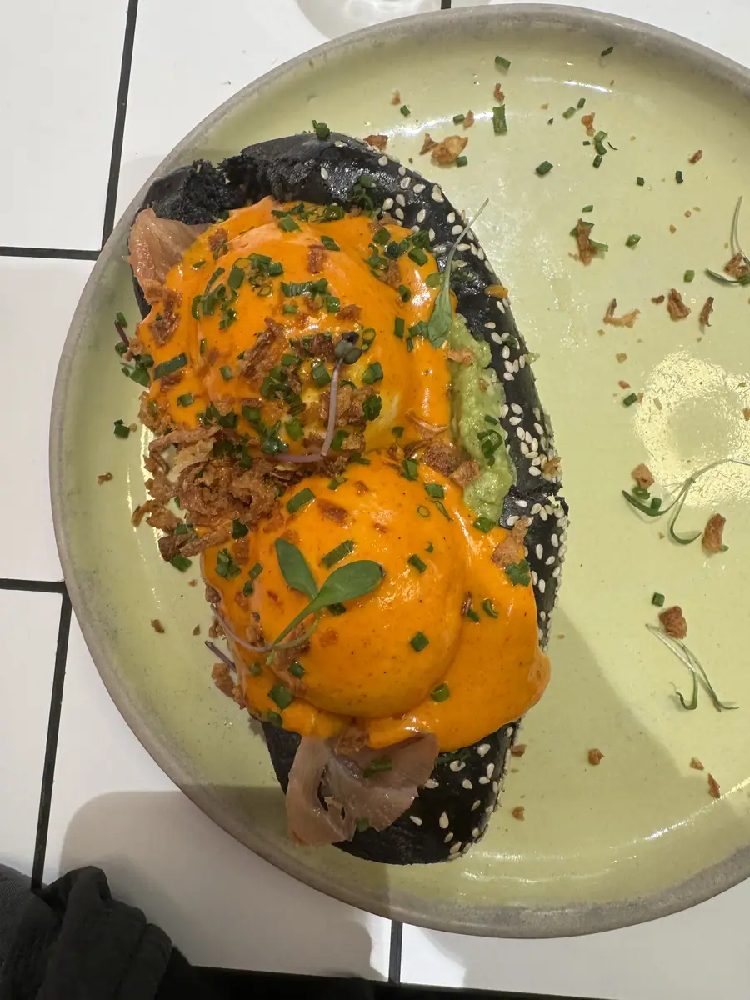

Le café du matin,
le déjeuner du midi.
Avant le brunch du week-end et le dîner du soir, La Maison Louisette sert le petit-déjeuner dès 8 h (9 h le dimanche) et le déjeuner du lundi au vendredi, au 8 boulevard Saint-Denis, à Paris 10e, au pied du métro Strasbourg-Saint-Denis.
Le matin.
Trois formules de petit-déjeuner — Le Petit Matin, Le Matin Louisette et Le Grand Matin —, les viennoiseries du matin (croissant pur beurre, pain au chocolat), la tartine beurre et confiture, et des assiettes salées pour ceux qui ont faim tôt : avocado toast, tchoutchouka, Croque Louis, Croque Louisette, œufs au choix. Côté sucré : pancakes, brioche perdue, crème brûlée.
Côté boissons chaudes : espresso, café allongé, noisette, café crème, latte, chocolat chaud, thés et infusions, matcha latte ; en boisson fraîche, les jus de fruits et l’iced latte.

Le midi.
Du lundi au vendredi, de 11 h à 17 h : le plat du jour à l’ardoise, deux formules — Déjeuner et Royale —, et la carte du midi. En entrée, burrata, soupe à l’oignon ou houmous. En plat, steak frites, tartare de bœuf, les trois burgers de la maison, fish & chips, penne au saumon, linguine au pesto, ou une salade : Crispy Caesar Louisette, Belle Niçoise, Nordique. En dessert, tiramisu, brioche perdue ou Crazy Profiteroles.
Le déjeuner se prend en salle ou en terrasse, sur le boulevard. Pour un déjeuner d’équipe, voir groupes et privatisation.
Le week-end.
Le samedi et le dimanche, le déjeuner laisse la place au brunch, servi de 11 h à 18 h. Le petit-déjeuner reste servi le matin, dès 8 h le samedi et dès 9 h le dimanche.
| Petit-déjeuner | Du lundi au samedi 8 h – 11 h, le dimanche 9 h – 11 h |
|---|---|
| Déjeuner | Du lundi au vendredi, 11 h – 17 h |
| Brunch | Samedi et dimanche, 11 h – 18 h |
| Adresse | 8 boulevard Saint-Denis, 75010 Paris |
| Métro | Strasbourg-Saint-Denis, lignes 4, 8 et 9 |
Les dates qui valent le déplacement.
Vingt-sept salles de spectacle sont à un quart d'heure de la maison, et le comptoir a ses soirées. Une fois par mois, nous envoyons les dates à retenir : les DJ, les soirées, ce qui change à la carte. Rien d'autre.
Vous vous désinscrivez en un clic. Votre adresse ne part chez personne, et ne sert qu'à ça.
M’inscrire — ouvre votre messagerie
Le message est déjà rédigé : il ne reste qu’à l’envoyer, et il vaut preuve de votre accord. Si votre téléphone n’ouvre rien, écrivez-nous à contact@louisette-paris.com. Voir la politique de confidentialité.
Une table pour midi ?
Déjeuner du lundi au vendredi, de 11 h à 17 h, 8 boulevard Saint-Denis, Paris 10e.